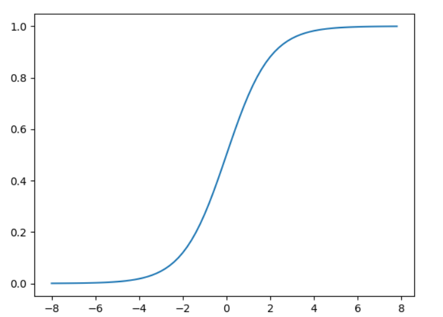
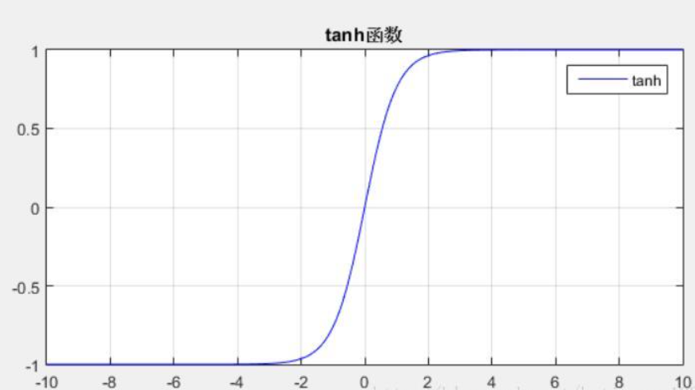
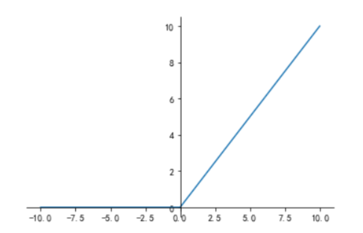

常见的神经网络激活函数
1.线性激活函数
线性激活函数的存在恰恰证明了需要非线性激活函数的存在，因为多个线性激活函数（多个隐藏层）神经网络与只有一个线性激活函数隐藏层的神经网络一样。
2.sigmoid 函数（logistic回归使用的激活函数）
a=g(z)=1+e−z1

导数：g′(z)=g(z)∗(1−g(z))
3. tanh函数
a=g(z)=ez+e−zez−e−z

tanh 函数是由sigmoid 函数平移收缩得到。
4.relu 函数
a=g(z)=max(0,z)g′(z)=⎩⎪⎪⎪⎪⎪⎪⎪⎨⎪⎪⎪⎪⎪⎪⎪⎧1,z>0undefined,z=00,z<0
